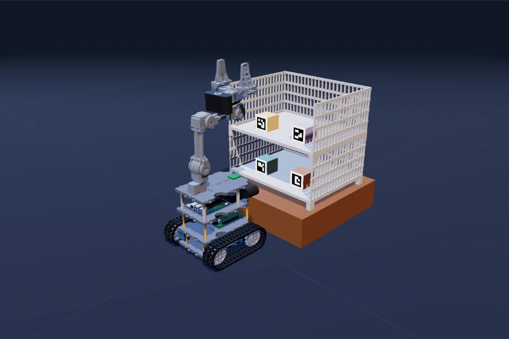
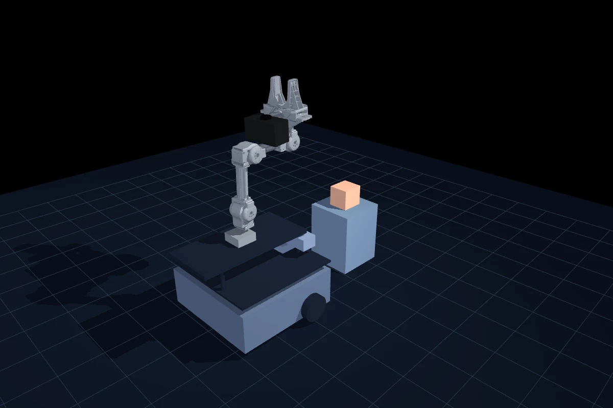

EXPLORE / CONTROL / CONNECT
Choose your twin.
살펴볼 디지털 트윈을 선택하세요.
로봇을 직접 움직이거나, ROS 2
상태를 연결할 수 있습니다.
Digital twins
02 ENVIRONMENTS
WEB · 바로 실행
01 / PERCEPTION & MANIPULATION
Shelf twin
최신 리더 로봇과 2단 선반. 팔·그리퍼와 물체 배치를 조작하고 ROS 2 텔레메트리를 확인합니다.
기구학 조작ArUco 1–4ROS 2 수신
브라우저에서 열기

DESKTOP · PC 실행
02 / LEARNING & SIMULATION
OMX MuJoCo
기존 배송 물리 시뮬레이터와 새 선반 표시 장면. 웹과 같은 색상과 조명으로 로컬에서 살펴봅니다.
배송 물리선반 표시로컬 Python
장면과 실행 방법 보기